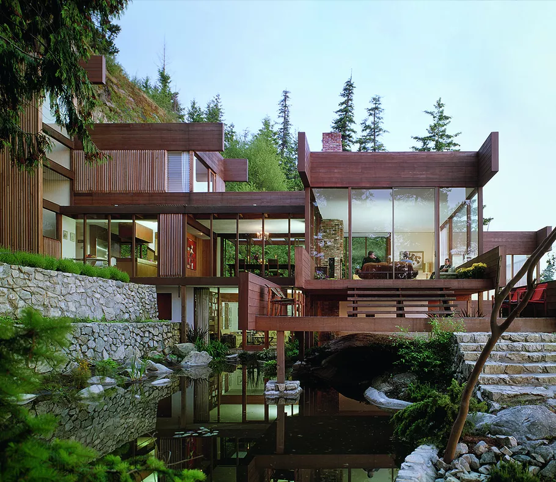

My Backstory
How I got into Software Development

I've always wanted to be an engineer and when I was yonger my parents would put me in STEM camps
These STEM camps exposed me to coding and are why I do it now.
My Vision and Goals
What I aspire to become in the future

I want to be an Architect or a Mechanical Engineer after I graduate from college.
I have always been intrested in physics, math, art, and design and it is the perfect combination of them